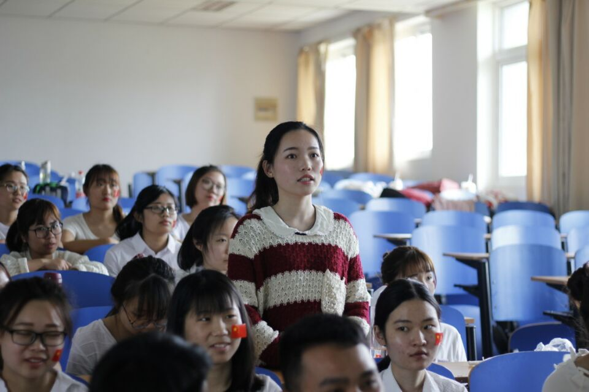
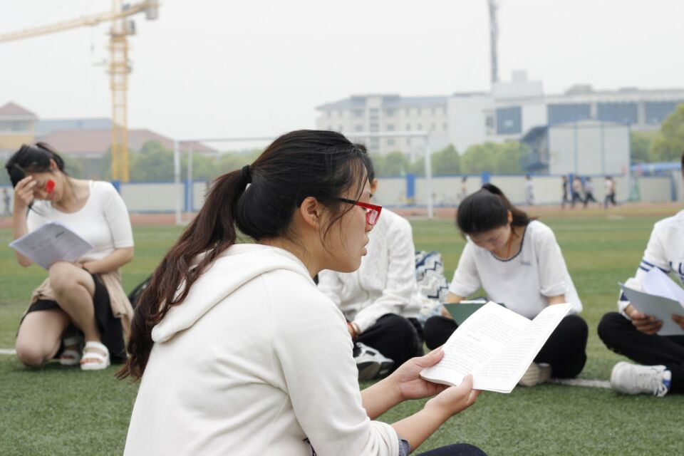

关于班级
班级简介

南京晓庄学院 美术学院 14级服装与服饰设计转本班是一支由江苏省各大专的优秀毕业生通过专转本选拔考试筛选出的人员组成的优秀团队。 班级成员的技能涵盖服装设计、绘画、摄影、平面设计、web大前端、数据挖掘、数据可视化等。从产品的设计到开发以及运用新媒体宣传都能完成。

整个班级在以团支书刘锡宁为核心的班干部领导下，以“优秀，优秀，更优秀！”为目标。精诚团结、互帮互助、共同发展。多次受到院领导的表扬。在服装设计等多个领域取得了不少成就。
如今临近大四毕业，在此祝所有考研的同学考研成功！不考研的同学能找到满意的工作！相信每一个同学都会成为所在领域的精英！
web技术支持 刘锡宁 2017年10月23日
首页